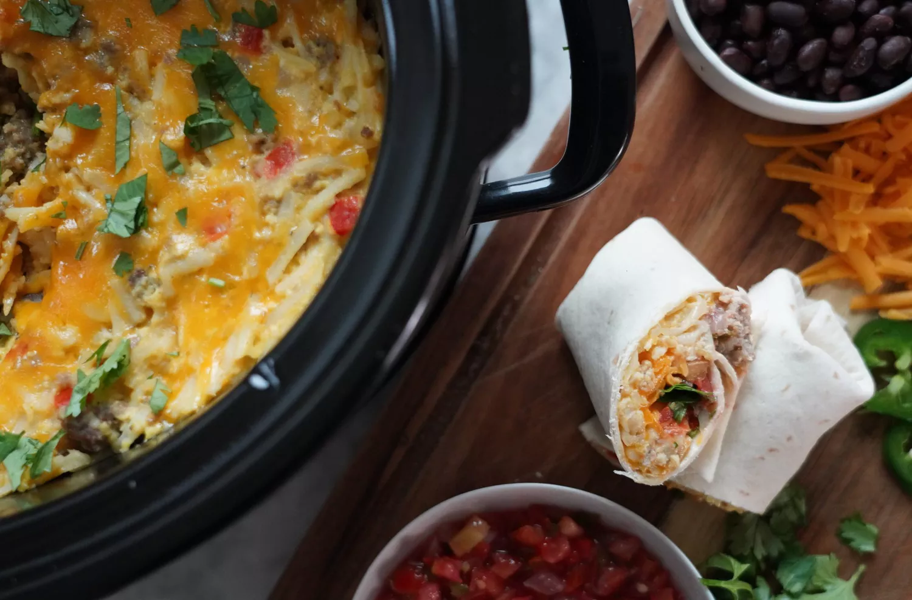
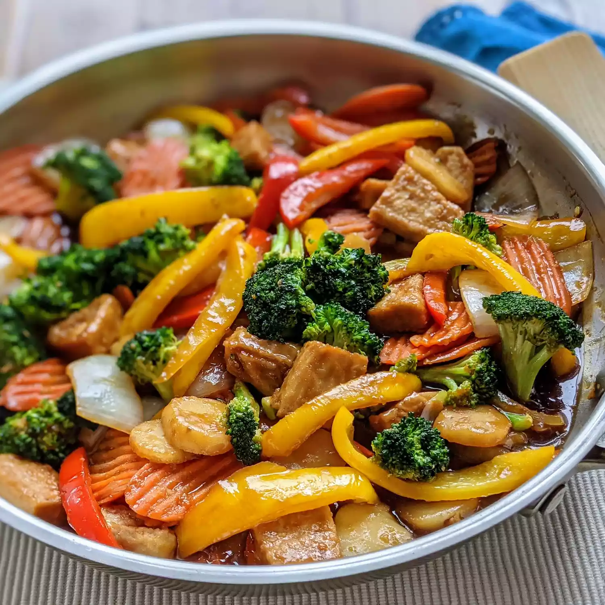
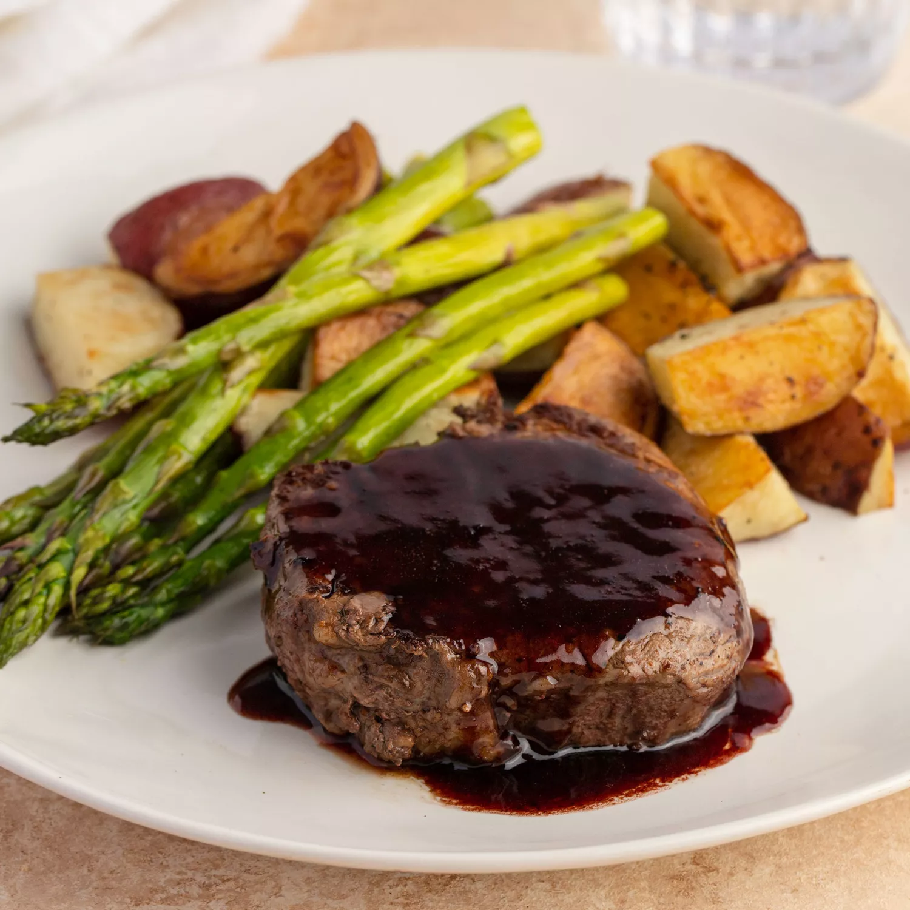
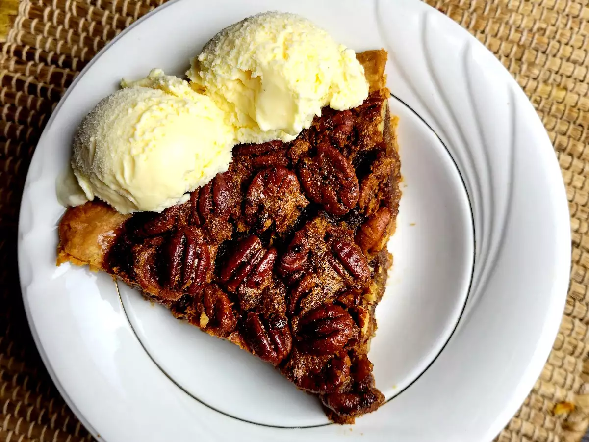
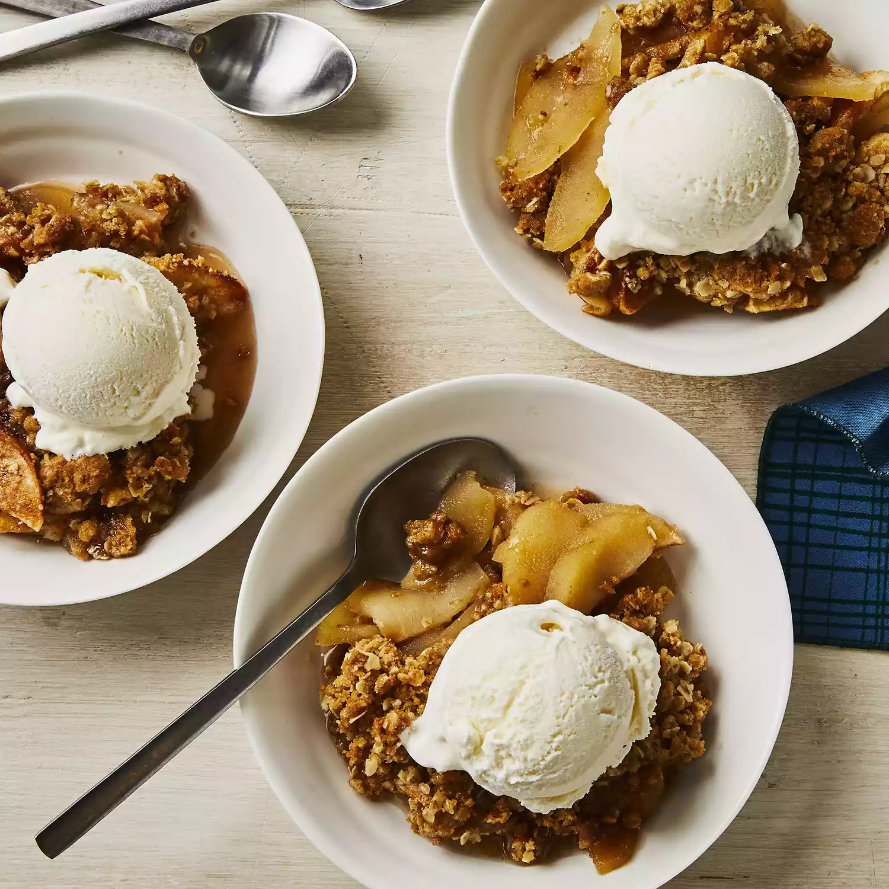

Disclaimer: None of these recipes are actually mine. They were all taken from allrecipes.com. This is just a
proof of concept for my web development class.
Breakfast Recipes
1. Waffles
Prep Time: 5 mins Cook Time: 20 mins Total Time: 25 mins Servings: 6 Yields: 6 Waffles
Ingredients:
2 large eggs
2 cups all-purpose flour
1 3/4 cups milk
1/2 cup vegetable oil
1 tablespoon white sugar
4 teaspoons baking powder
1/4 teaspoon salt
nonstick cooking spray
Steps:
Preheat a waffle iron according to manufacturer's instructions.
Whisk eggs in a large bowl until light and fluffy. Add flour, milk, and vegetable oil and mix to combine.
Whisk in sugar, then mix in baking powder, salt, and vanilla just until smooth, being careful not to
overmix.
Spray the preheated waffle iron with nonstick spray. Pour batter onto into the hot waffle iron and cook
until golden brown and the iron stops steaming, 3 to 5 minutes. Repeat to cook remaining waffles.
2. French Toast
Prep Time: 5 mins Cook Time: 10 mins Total Time: 15 mins Servings: 3 Yields: 6 slices
Ingredients:
2/3 cups milk
2 large eggs
1 teaspoon vanilla extract (optional)
1/4 teaspoon ground cinnamon (optional)
salt to taste
6 thick slices bread
1 tablespoon unsalted butter, or more as needed
Steps:
Whisk milk, eggs, vanilla, cinnamon, and salt together in a shallow bowl.
Lightly butter a griddle and heat over medium-high heat.
Dunk bread in the egg mixture, soaking both sides. Transfer to the hot skillet and cook until golden, 3 to 4
minutes per side. Serve hot.
3. Ham and Cheese Biscuit Muffins

Prep Time: 20 mins Cook Time: 3 hrs 20 mins Total Time: 3 hrs 40 mins Servings: 12 Yields: 12
burritos
Ingredients:
2 pounds bulk breakfast sausage
1 medium onion, finely chopped
1 medium bell pepper, finely chopped
cooking spray
1 (16 ounce) package frozen shredded hash browns
2 ½ cups shredded Cheddar cheese
12 large eggs
1 cup milk
1 teaspoon kosher salt
½ teaspoon ground black pepper
12 (10 inch) flour tortillas, warmed
Steps:
Heat a large skillet over medium-high heat. Add sausage and cook, breaking it up with the back of a spoon,
until lightly browned and crumbly, about 8 minutes. Add onion and bell pepper; cook until onion is softened,
about 5 more minutes. Blot any excess oil in the pan with a paper towel. Continue to cook until sausage is
cooked completely, 5 to 7 more minutes. Remove from the heat. (This step can be done 1 day ahead.)
Spray a slow cooker with cooking spray. Add sausage mixture, hash browns, and Cheddar cheese.
Whisk eggs, milk, salt, and pepper together in a bowl until well blended. Pour into the slow cooker and stir
until evenly combined. Cook on Low 6 to 8 hours or on High for 3 to 4 hours, stirring after the first hour.
Serve mixture inside warmed tortillas with desired toppings.
Lunch + Dinner Recipes
1. Chicken Tortilla Soup
Prep Time: 15 mins Cook Time: 25 mins Total Time: 40 mins Servings: 12
Ingredients:
1 tablespoon olive oil
1 medium onion, chopped
3 cloves garlic, minced
1 (28 ounce) can crushed tomatoes
1 (10.5 ounce) can condensed chicken broth
1 ¼ cups water
2 teaspoons chili powder
1 teaspoon dried oregano
1 (15 ounce) can black beans, rinsed and drained
2 large boneless chicken breast halves, cooked and cut into bite-sized pieces
1 cup whole corn kernels, cooked
1 cup white hominy
1 (4 ounce) can chopped green chile peppers
¼ cup chopped fresh cilantro
½ cup crushed tortilla chips, or to taste
2 medium avocados, sliced, or to taste
½ cup shredded Monterey Jack cheese, or to taste
2 tablespoons chopped green onions, or to taste
Steps:
Heat oil in a stockpot over medium heat. Add onion and garlic; saute until soft, about 5 minutes. Stir in
crushed tomatoes, condensed broth, water, chili powder, and oregano; bring to a boil. Reduce heat and simmer
for 5 to 10 minutes.
Stir in black beans, cooked chicken, corn, hominy, chile peppers, and cilantro. Simmer for 10 minutes.
Ladle soup into individual serving bowls, and top with crushed tortilla chips, avocado slices, Monterey Jack
cheese, and green onions.
2. Chicken Stir-Fry

Prep Time: 20 mins Cook Time: 20 mins Total Time: 40 mins Servings: 6
Ingredients:
4 cups water
2 cups white rice
⅔ cup soy sauce
¼ cup brown sugar
1 tablespoon cornstarch
1 tablespoon minced fresh ginger
1 tablespoon minced garlic
¼ teaspoon red pepper flakes
3 skinless, boneless chicken breast halves, thinly sliced
2 tablespoons sesame oil, divided
1 head broccoli, broken into florets
1 onion, cut into large chunks
1 cup sliced carrots
1 (8 ounce) can sliced water chestnuts, drained
1 green bell pepper, cut into matchsticks
Steps:
Bring water and rice to a boil in a saucepan over high heat. Reduce heat to medium-low, cover, and simmer
until rice is tender, and liquid has been absorbed, 20 to 25 minutes.
Meanwhile, combine soy sauce, brown sugar, and cornstarch in a medium glass or ceramic bowl; stir until
smooth. Stir in ginger, garlic, and red pepper flakes; add chicken and stir to coat. Cover and marinate in
the refrigerator for at least 15 minutes.
Heat 1 tablespoon sesame oil in a wok or large skillet over medium-high heat. Add broccoli, onion, carrots,
water chestnuts, and bell pepper; cook and stir until just tender, about 5 minutes. Transfer vegetables into
a dish; set aside.
Heat remaining 1 tablespoon sesame oil in the same wok or skillet over medium-high heat. Add chicken,
reserving marinade, and cook until just browned, about 2 minutes per side; stir in vegetables and reserved
marinade. Bring to a boil; cook and stir until chicken is no longer pink in the center and vegetables are
tender, 5 to 7 minutes. Serve over rice.
3. Filet Mignon with Rich Balsamic Glaze

Prep Time: 5 mins Cook Time: 10 mins Total Time: 15 mins Servings: 2
Ingredients:
2 (4 ounce) filet mignon steaks
½ teaspoon ground black pepper, or to taste
salt to taste
¼ cup balsamic vinegar
¼ cup dry red wine
Steps:
Sprinkle both sides of steaks with pepper and salt.
Heat a nonstick skillet over medium-high heat. Sear steaks in the hot pan until browned, about 1 minute per
side.
Reduce heat to medium-low, and pour in balsamic vinegar and red wine. Cover and cook for 4 minutes. Flip
steaks and baste with sauce; cover and cook for 4 minutes longer.
Remove steaks to two warmed plates. Spoon a tablespoon of glaze over each steak and serve immediately.
Dessert Recipes
1. Brownies
Prep Time: 25 mins Cook Time: 25 mins Additional Time: 10 mins Total Time: 1 hour Servings:
16 Yields: 16 brownies
Ingredients:
½ cup white sugar
2 tablespoons butter
2 tablespoons water
1 ½ cups semisweet chocolate chips
2 large eggs, beaten
½ teaspoon vanilla extract
⅔ cup all-purpose flour
½ teaspoon salt
¼ teaspoon baking soda
Steps:
Preheat the oven to 325 degrees F (165 degrees C). Grease an 8-inch square pan.
Combine sugar, butter, and water in a medium saucepan; cook and stir over medium heat until boiling. Remove
from heat and stir in chocolate chips until melted and smooth; mix in eggs and vanilla. Combine flour, salt,
and baking soda; stir into the chocolate mixture. Spread brownie batter evenly into the prepared pan.
Bake in the preheated oven until top is dry and edges have started to pull away from the sides of the pan,
about 20 to 30 minutes. Let cool completely before cutting into squares.
2. Chocolate Pecan Pie

Prep Time: 10 mins Cook Time: 40 mins Total Time: 50 mins Servings: 8 Yields: 1 9-inch pie
Ingredients:
1 cup light corn syrup
⅔ cup white sugar
⅓ cup margarine, melted
3 large eggs
½ teaspoon salt
1 ½ cups semisweet chocolate chips
1 cup pecan halves
1 (9 inch) unbaked pie crust
Steps:
Preheat the oven to 375 degrees F (190 degrees C).
Combine corn syrup, sugar, melted margarine, eggs, and salt in a mixing bowl; beat with an electric mixer
until combined. Stir in chocolate chips and pecans. Pour mixture into pie crust.
Bake in the preheated oven until set, 40 to 50 minutes.
Cool completely before serving.
3. Apple Crisp

Prep Time: 30 mins Cook Time: 45 mins Total Time: 1 hr 15 mins Servings: 12 Yields: 1 9x13-inch pan
Ingredients:
10 cups all-purpose apples, peeled, cored and sliced
1 cup white sugar
1 tablespoon all-purpose flour
1 teaspoon ground cinnamon
½ cup water
1 cup quick-cooking oats
1 cup all-purpose flour
1 cup packed brown sugar
¼ teaspoon baking powder
¼ teaspoon baking soda
½ cup butter, melted
Steps:
Preheat the oven to 350 degrees F (175 degrees C).
Place sliced apples in a 9x13-inch baking dish. Mix white sugar, 1 tablespoon flour, and cinnamon together;
sprinkle over apples. Pour water evenly over apples.
Combine oats, 1 cup flour, brown sugar, baking powder, and baking soda in a large bowl. Add melted butter
and mix with a fork until crumbly; sprinkle evenly over apple mixture.
Bake in the preheated oven until top is golden brown and apples are bubbling around the edges, about 45
minutes.